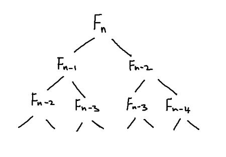

date posted: 2020-02-22
Dynamic programming which is named by Bellman Ford in 1952 is a technique used to increase performace in a problem, that can be broken down to subproblems and answers from previous subproblems are used recursively. This similar divide and conquer technique since they both break down problem into subproblems and approach smaller problems one by one however in order to increase performance with dynamic programming approach a problem needs to has additional condition even though with out the condition a problem can be solved using dynamic programming it wouldn't be efficient.
After all reason for using some kind of technique in computer science is to increase efficiency. In order to benefit from dynamic programming technique a problem should satisfy two additional conditions then questions that can be solved by divide and conquer:
larger/later subproblems require answers from previous sub problem's answers.
subproblems are reused several times
So why so many conditions?
Dynamic programming works in following steps:
The reason for storing answers in a table is because since we use dynamic programming on questions that have overlapping sub-problems and sub problem depend on previous answers we do not want to calculate already solved problem again. By storing it in a table we can avoid computing same problem again.
So if a problem does not satisfy conditions we could still use dynamic programming approach but there is no point in storing answers of subproblems into a table, it would be total waste of space since those answers will not be used to solve other subproblems.
Now that you know what dynamic programming is and where to use it, let's find nth fibonacci number using recursive algorithm then improve its performance using two different types of dynamic programming Memoization and Tabulation.
Below is algorithm for finding nth fibonacci number in python.
def fib(n):
if n<=2: f = 1
else: f = fib(n-1) + fib(n-2)
return f
Its performance becomes intuitive if I represent it as a tree.
If you want to find Fn then you first need to find Fn-1, Fn-2 and for each of them we need to find two of its previous numbers and so on... As we go down each depth there are 2^n numbers to compute therefore its time complexity would be O(2^n).
If we look carefully at our fibonacci tree above we can see there are duplicate values and current problem relies on its previous problem's answer. Doesn't this sound like conditions we've described above? Yes it does in fact satisfy conditions of dynamic programming question therefore let's increase performance by using Memoization dynamic programming approach. Simply you are "Memoing" already solved problem so that you can just take it out of your memo whenever you need it.
It is referred to as top-down approach since if you want to find F(n) then we goto F(n-1), F(n-2) then find their previous numbers and so on until very bottom. Even though "dynamic programming" sounds fancy it's very simple. Memoization simply compute a subproblem, store it in a dictionary and return, if it already exiests return that value.
memo = {}
def fib(n):
if n in memo: return memo[n]
if n<=2: f = 1
else: f = fib(n-1) + fib(n-2)
memo[n] = f
return f
We've just added 3 lines of code and improved performance from O(2^n) to O(n).
Note that in fibonacci number in order to find Fn we need to compute Fn-1, Fn-2, ... and so on. In recursive algorithm we needed to compute subprolblems couple of time however in memoization if we have computed it we never have to compute it again therefore we only need to compute Fn-1, Fn-2, ... and so on only once giving us O(n).
fib_table = {}
def fib(n):
for k in range(1, n+1):
if k <=2:
f=1
else:
f = fib_table[k-1] + fib_table[k-2]
fib_table[k] = f
return fib_table[n]
As you can see we are starting from k = 1 which will satisfy the base case therefore f = 1 and we store that into our fibonacci table, next k=2 and again f = 2 and store into table. Next k = 3 and since we've already stored k=2,k=1 into our fibonacci table we simply use them to find F3. Again we can see that we only need to compute f1,f2, ... upto Fn once therefore giving same time complexity as our top-down approach.
It seems like both top-down and bottom-up give same performance boost then why is there two methods? why not just stick to one?
Memoization is preferred when we do not need to know answers to all previous subproblems to solve final problem. In fibonacci numbers we needed to know all of previous subproblems in order to find Fn however if we only need subset of previous subproblems to find final answer we would use memoization technique.
Tabulation is preferred when you need all previous subproblems to find final answer just like in fibonacci numbers.